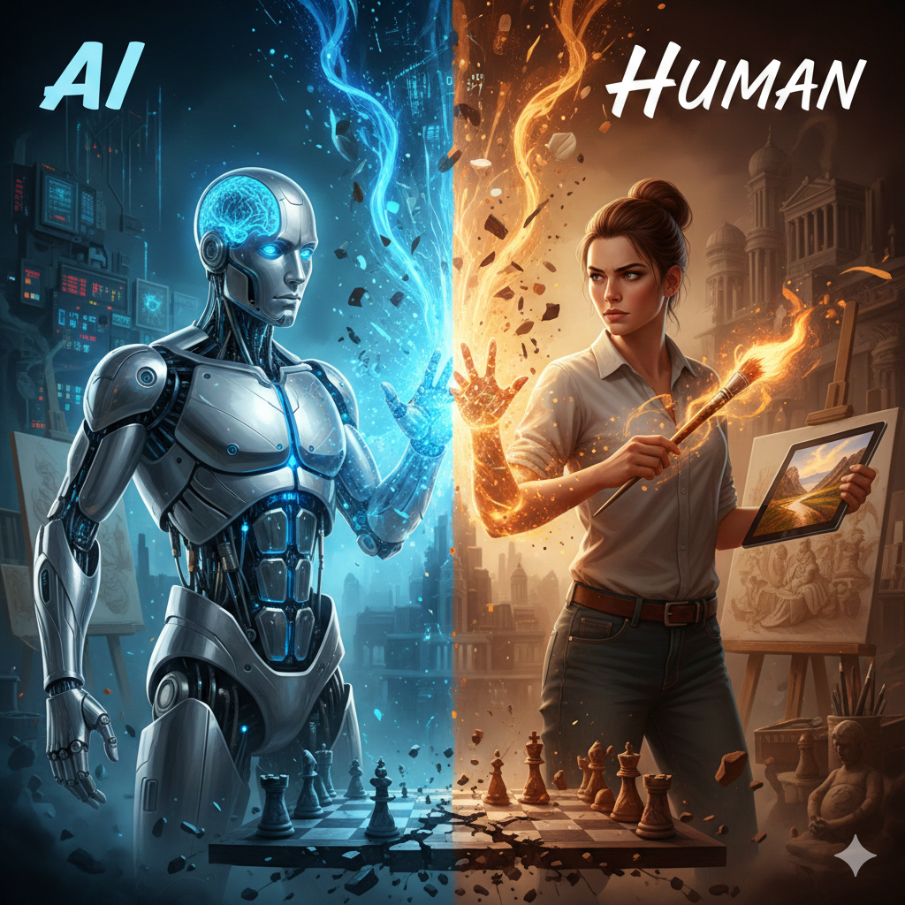

Why are normal people afraid of AI?Many people fear AI because they think it will replace jobs, outsmart humans, or become uncontrollable. The rapid growth of AI creates uncertainty, and humans naturally fear what they do not fully understand. What can AI do?AI can automate tasks, analyze massive amounts of data, generate content, assist in decision-making, and even mimic human creativity. It excels at speed, accuracy, and consistency. Why do we use AI every day?AI is already part of daily life - from Google searches to YouTube recommendations, navigation apps, spam filters, smart home devices, and even medical diagnostics. We use AI because it makes life easier, faster, and more efficient. |
 |
AI vs Human - Pros & Cons Table
| Aspect | AI Pros | AI Cons | Human Pros | Human Cons |
|---|---|---|---|---|
| Speed | Processes data instantly | Depends on hardware | Creative problem solving | Slow compared to machines |
| Accuracy | High precision | Can make errors if trained poorly | Intuition-based decisions | Prone to mistakes |
| Creativity | Can generate ideas based on patterns | Lacks true imagination | Original creativity | Limited by experience |
| Emotion | No emotional bias | No empathy | Empathy & emotional intelligence | Emotional decisions can be flawed |
| Learning | Learns from massive datasets | Needs training data | Learns from life experience | Slow learning curve |
Views: 1,842 | Likes: 326 | Date Added: 2026-02-28 | Added By: Dr. Witcher